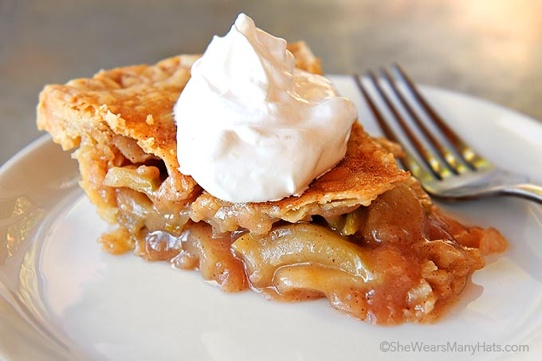

Perfect Apple Pie

Apple pie topped with ice cream! Yum!
This is a family apple pie recipe that will warm your whole body from your tongue to your toes! This pie uses Gala, Fuji, and Granny Smith apples to create a balanced flavor that is both tart and sweet. Feel free to top with ice cream if you'd like a sensory sensation of hot and cold!
Prepare pie a day before serving to allow time to firm up.
For pie crust recipe visit Flaky Pie Crust
Ingredients
- 6 or 7 apples (mix of Granny Smith, Gala, and Fuji
- 1 c sugar
- 2 tbs all purpose flour
- 1 tsp cinnamon
- Dash of nutmeg
- Dash of salt
- Fresh lemon juice
- Flaky Pie Crust
- 2 tbs butter
Steps
- Prepare pie crust. Separate into two dough balls, wrap in plastic, and place in the fridge to rest.
- Preheat oven to 400 degrees
- Peel and core apples. Slice apples (about 1/4" slices.
- Place apple slices in a large bowl and squeeze juice from half a lemon over them.
- In a small bowl, combine the sugar, flour, spices, and salt.
- Add dry mix to the apples. If the apples are too wet, add a little more flour
- Roll out half the pie crust big enough to line a 9in pie plate. Line the dish and then fill it with the apple mixture.
- Dot the apples with small pieces of butter.
- Roll out the second half of the pie crust. Cover the pie, trim the excess, and crimp the edges with a fork to seal.
- Cut steam vents on the top. Add any decorations you'd like to make from the excess crust.
- Brush the top of the pastry crust with melted butter. Sprinkle a little sugar on top.
- Cover the pie crust with a pie shield or aluminum foil to protect the edges. Cook pie in preheated oven for 50 mins. Insert a cake tester through the steam vents to feel if the apples are tender.
- Before serving pie, reheat in a warm oven. Serve with ice cream if you want to!